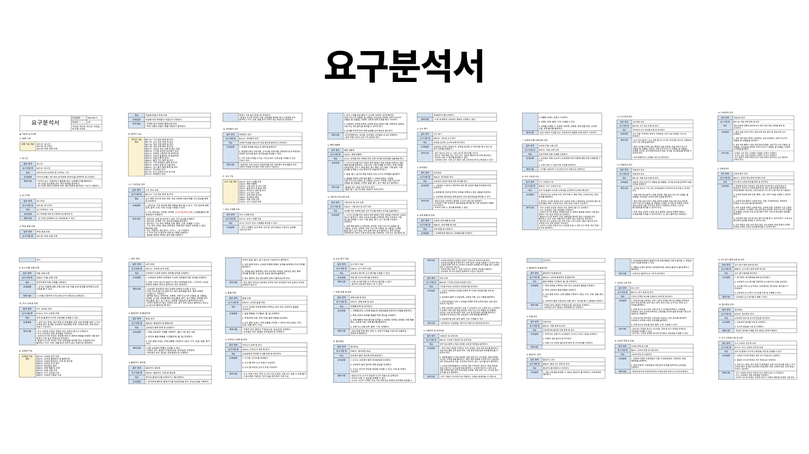
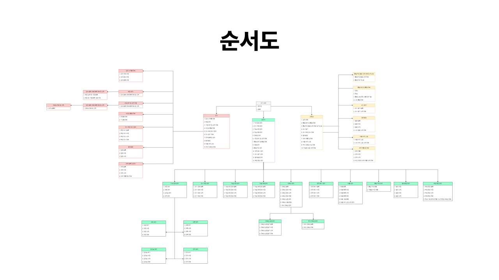
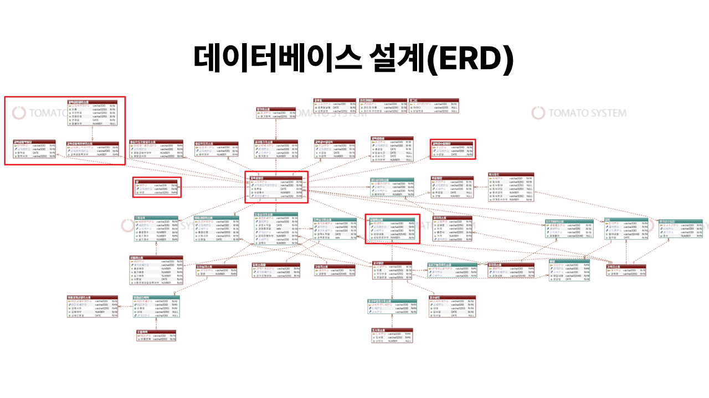
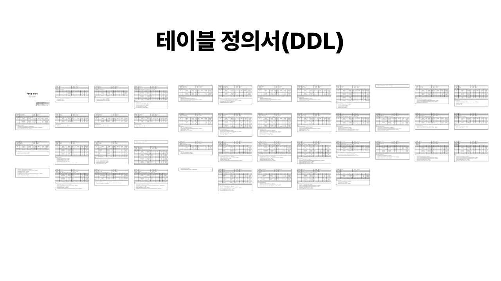
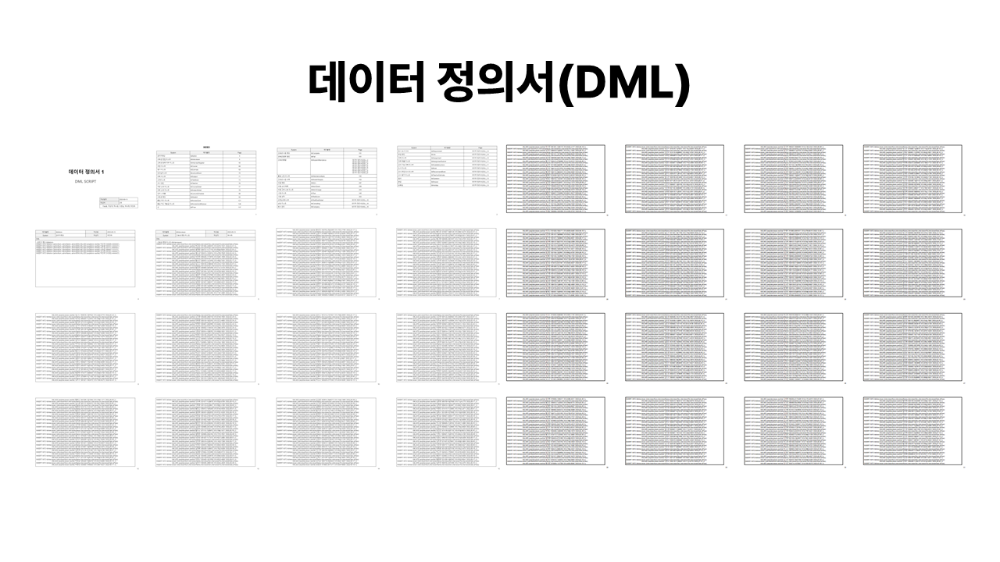
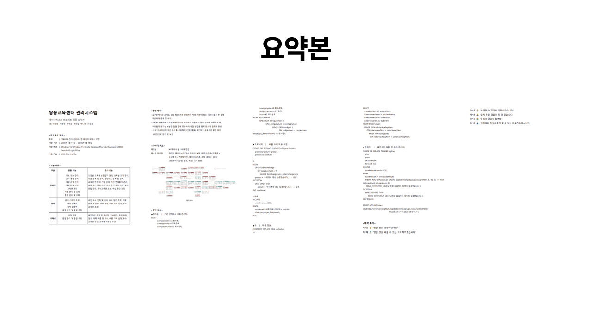

교육센터 관리 시스템
Project information
- 프로젝트명: 교육센터 관리 시스템
- 분류: Oracle Project
- 주제: 관계형 데이터베이스 교육 내용을 바탕으로 교육센터 운영을 위한 각종 데이터 입력, 수정, 삭제 및 조회 기능을 가진 데이터베이스를 구현하고자 하였습니다.
- 개발 환경: Oracle Database 11g, SQL Developer, DBeaver, eXERD, Draw.io, Google Drive
- 사용 기술: ANSI-SQL, PL/SQL
- 주요 기능: 관리자의 기초 정보 관리·교사 계정 관리·개설 과정 관리·개설 과목 관리·교육생 관리·시험 관리 및 조회·출결 관리 및 조회, 교사의 강의 스케줄 조회·배점 입출력·성적 입출력·출결 관리 및 출결 조회, 교육생의 성적 조회·출결 관리 및 출결 조회 등
- 담당 업무: 쿼리문 작성(관리자의 교육생 관리 기능 및 상담일지 관리 기능, 관리자·교사·교육생의 우수 교육생 관련 기능, 교사의 배점 입출력 기능), 상기 항목의 더미 데이터 생성
- 획득 역량: 관계형 데이터베이스 설계 및 운용
- 프로젝트 기간: 2023.09.11 ~ 2023.09.18 (8일)
- GitHub: https://github.com/NaraeP/Oracle-Project_education-center-management-system

.png)
기획 배경
: 주어진 요구 분석서를 바탕으로 교육센터 관리를 위한 데이터베이스 설계 및 운용
구현 목표
-
관리자/교사/교육생별 기능을 위한 쿼리문 작성
-
관리자
- 기초 정보 관리
- 교사 계정 관리
- 개설 과정 관리
- 개설 과목 관리
- 교육생 관리
- 시험 관리 및 조회
- 출결 관리 및 조회
-
교사
- 강의 스케줄 조회
- 배점 입출력
- 성적 입출력
- 출결 관리 및 출결 조회
-
교육생
- 성적 조회
- 출결 관리 및 출결 조회
-
관리자
-
기본 요구 분석 외 추가 요구 분석을 진행하여 추가 기능 구현
-
관리자
- 기간별 교육생 상담일지 관리
- 과목별 교재 관리
- 비품 등록 및 관리
- 출입카드 등록 및 관리
- 교육생 면접 및 선발 관리
- 기관 연계 회사 관리
- 교사 평가 항목 관리
- 교사 추천 도서 관리
- 질의 응답 관리
- 우수 교육생 조회
- 취업 명단 관리
- 학생 생일 조회
-
교사
- 추천 도서 입력 및 관리
- 교사 평가 조회
- 과제 등록 및 관리
- 질의 응답
- 비품 교체 신청
- 우수 교육생 조회
-
교육생
- 출입카드 조회 및 재신청
- 교사 평가
- 질의 응답 질의
- 과제 제출 및 조회
- 비품 교체 신청
- 우수 교육생 수상
- 교육생 지원금 수급
-
관리자
-
절차형 SQL 활용
- 프로시저, 사용자 정의 함수, 트리거 등의 다양한 절차형 SQL을 활용하여 쿼리문 작성
업무 분담
- 박나래: 교육생명단, 교육생수료명단, 교육생탈락명단, 교육생면접리스트, 교육생등록여부리스트, 상, 우수 교육생, 교육생 상담일지
- 이승원: 강의스케줄, 교육생수급내역, 과제리스트, 과제제출리스트
- 이연섭: 관리자, 교사명단, 취업명단, 질의/응답, 교사평가리스트, 평가리스트, 교재리스트, 교재상세리스트
- 차민재: 강의실리스트, 강의가능과목리스트, 교육생출결, 출결신청리스트, 과정리스트, 과정상세리스트, 과목리스트, 과목상세리스트
- 최진희: 도서리스트, 교사추천도서리스트, 시험리스트, 시험성적
- 허수경: 회사관리, 회사요구조건, 비품목록, 비품상세목록, 출입카드리스트, 출입카드재발급리스트
주요 구현 기능
❗하단 슬라이드의 좌/우 버튼을 클릭하여 구현 기능을 확인할 수 있습니다.
| 관리자 기능 - 기간별 교육생 상담일지 관리 | |
|---|---|
|
|
산출물
- 요구분석서 (17장)
- 순서도
- 데이터베이스 설계(ERD)
- 테이블 정의서(DDL) (50장)
- 데이터 정의서(DML) (188장)
- ANSI-SQL Script (96장)
- PL/SQL Script (267장)
- PPT
- 요약본 (5장)
| 요구분석서 | 순서도 | 데이터베이스 설계(ERD) |
|---|---|---|
|  |  |  |
| 테이블 정의서(DDL) | 데이터 정의서(DML) | ANSI-SQL Script |
|  |  |  |
| PL/SQL Script | 요약본 | |
 |
 |
개발 후기
이번 프로젝트는 ‘클라우드 서비스를 위한 관계형 데이터베이스 설계 및 운용’ 교과목의 수업을 마친 후 진행되었다. 따라서 첫 프로젝트와 달리 프로그램 결과물을 만드는 게 아니라 그에 쓰이는 데이터베이스를 구현하는 것이 주목적인 프로젝트였다.
본격적으로 데이터베이스 프로젝트를 경험하기 전에, ‘영화’와 관련된 데이터베이스를 다루는 작업을 일차적으로 진행하고 바로 본 프로젝트를 진행했다. 덕분에 처음 데이터베이스를 다룸에도 불구하고 프로젝트에 대한 흐름을 이해하는 데 많은 도움이 되었다.
이번 프로젝트는 처음부터 우리 팀만의 아이디어로 기획한 것이 아니라, 주어진 요구 분석서를 바탕으로 클라이언트의 요구 기능을 구현하는 작업이었기에 구현하고자 하는 바가 명확하여 설계에 속도를 낼 수 있었다. 다만 클라이언트의 요구를 분석하고, 이를 바탕으로 우리 팀 고유의 추가 요구 분석까지 구현해야 했기에 기존의 흐름을 벗어나지 않는 선에서 어떤 기능을 추가해야 할까에 대한 고민을 많이 했던 것 같다.
실제로 우리가 회사에 소속되어 업무를 진행할 때는 이번 프로젝트와 같이 클라이언트의 요구사항에 맞게 개발을 담당하게 될 테니 이것 또한 유익한 프로젝트 경험이었다.
다만 처음으로 데이터베이스를 배워서 다루다 보니, 설계 과정에서 다수의 수정이 있기도 했고 초반에 작업한 데이터 구조가 완벽하진 않다 보니 후반부에 '다른 방법으로 설계해야 했는데..' 하고 생각이 들기도 했다. 또한 여러 테이블이 참조 관계로 얽혀있다 보니 유효한 더미 데이터를 생성하는데 너무 여러 가지를 고려해야 해서 더미 데이터를 생성하는데도 매우 많은 시간을 할애했었다.
그리고 요구 분석서를 이해하고 분석하는 것이 예상외로 쉽지 않았다. '교육센터 관리 프로그램'이라는 비교적 낯설지 않은 주제임에도 불구하고 요구 분석서에 작성된 과정, 과목과 관련된 사소한 단어 해석에 대한 견해 차이, 강의실 및 교사 배정은 과목이 개설될 때 배정되어야 하는지 과정이 개설될 때 배정되어야 하는지 등 본 업무의 흐름을 제대로 알아야 해당 업무의 프로그램을 제대로 만들 수 있겠다고 더 명확히 깨닫게 된 계기가 되었다.
비전공자로 개발 공부를 시작하면서 '데이터베이스'의 개념과 역할, 중요도를 몰랐기에 이번 프로젝트에서 '내가 무엇을 해야 하는지'에 대해 감을 잡기가 너무 어려웠었다. 특히 프로젝트 초반 테이블을 생성할 때도 내가 이 데이터를 어떻게 사용하겠다는 흐름이 잡히지 않았었다. 결과적으로는 프로젝트 마감 전날 요구 분석에 맞춰서 내가 어떤 값을 도출해야 하고, 어떤 사용자를 대상으로 하는지를 확실하게 깨달았기에 밤을 새우며 쿼리문을 작성해 무사히 마무리할 수 있었다. 그렇기에 아쉬움이 더 남고 프로젝트 당일 오전에야 내 파트 결과물을 제출할 수 있어서 팀원들에게 미안하고 고마운 마음이 컸다.
팀원으로서의 후기
이번 프로젝트를 진행했던 팀원들 모두가 적극적으로 본인이 할 일을 찾아서 임했기에 업무 분담부터 진행까지 너무 순조로웠다. 나 또한 팀원으로서 내 담당 업무가 끝나면 적극적으로 다른 업무를 찾아 나서고, 아직 끝나지 않은 팀원의 업무를 함께 진행하며 프로젝트의 다음 단계로 나가고자 했다. 여러 테이블이 참조 관계로 얽혀있어 데이터의 삭제 기능을 구현하는 데 어려움을 겪기도 하고, 상당한 양의 유효한 더미 데이터를 생성하다 보니 데이터 생성 중간에 데이터 무결성이 위반될 뻔한 어려움을 겪기도 했는데 다른 팀원의 도움을 받아 문제를 해결하고, 각자 어려움이 있는 파트에 함께 상의하며 고민할 수 있는 팀원이 있음에 감사했다.
다만 이번 오라클 프로젝트는 데이터 설계 및 쿼리문을 작성하는 프로젝트이다 보니 git을 사용하여 협업을 한 게 아니라, 각자의 개발 환경에서 담당 파트의 데이터를 기반으로 쿼리문을 작성하다 보니 마지막에 모든 팀원의 쿼리문을 병합하고 테스트를 진행할 때 시간이 꽤 소요되긴 하였다. 그 외 협업 과정 중에는 구글 드라이브에 모든 문서를 공유하여 진행 상황을 확인하고 실시간으로 팀원들과 의사소통을 진행하며 점검 및 보완했기에 전체적으로 원활하게 진행될 수 있었다.
개발자 후기
앞서 프로젝트 후기에서 기술한 것처럼 데이터베이스에 대한 개념이 전혀 없는 상태였는데 본 프로젝트를 마무리하며 데이터 구조와 요구 분석에 대해 조금 더 이해할 수 있었고 데이터의 ‘힘’에 대해 느낄 수 있었다. Join 쿼리문이나 그외 여러 가지 쿼리문 사용에 미숙했으나 프로젝트를 진행하며 자주 사용하다 보니 초반에 비해 아주 능숙하게 작성할 수 있게 되었다. 다만 독립적으로 판단하여 데이터베이스를 구축하는 능력은 아직 매우 매우 매우 매우 미숙하므로 남은 프로젝트에서 계속 접하면서 데이터베이스 구축에 대해 꾸준히 배울 예정이다.